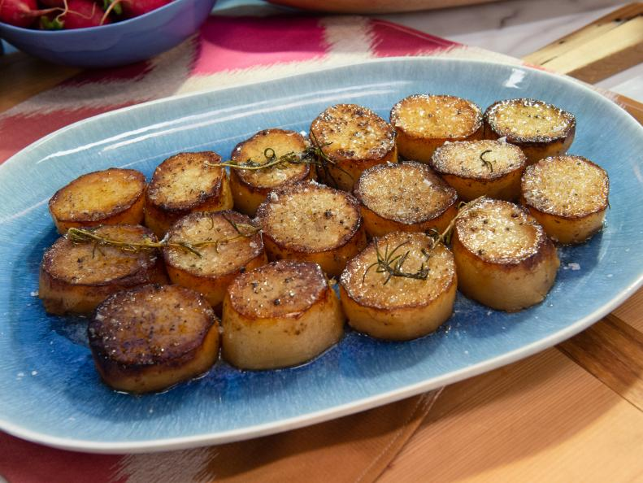

Melting Potatoes

Melted potato recipe turns your favorite spud into creamy, caramelized bites
Ingredients
- 4 russet potatoes
- Kosher salt and freshly cracked black pepper
- 2 tablespoons vegetable oil
- 10 tablespoons unsalted butter
- 1 cup low-sodium chicken broth
- 2 sprigs fresh rosemary
- 2 cloves garlic
- Flaky salt, to garnish
Steps
- Preheat the oven to 400 degrees F.
- Peel the potatoes and slice off the ends. Cut into 1-inch slices. Season both sides of the potatoes generously with kosher salt and pepper.
- Heat a cast-iron skillet (or other heavy-duty, ovenproof skillet) over medium-high heat. Add the oil and 4 tablespoons of the butter. Sear the potatoes on one side until golden brown, about 4 minutes. Flip the potatoes and add the broth, rosemary and garlic. Cut the remaining 6 tablespoons butter into cubes and scatter on top of the potatoes. Transfer the skillet to the oven and cook until fork-tender, about 30 minutes. Garnish with flaky salt and spoon the pan sauce all over the potatoes.